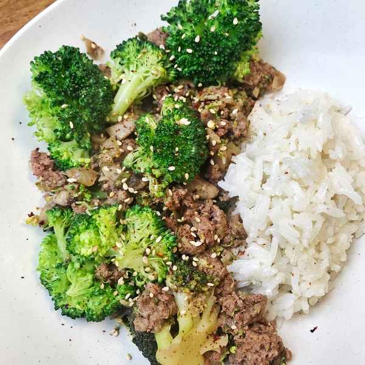

Home
Spicy Beef Stir Fry

Description
An exact recipe, ingredient, and step outline for lasagna. This is just branded for stir fry.
- 2 tablespoons olive oil
- 1/2 yellow onion
- 2 cloves garlic, minced
- 1 lb ground beef
- 1 tsp harmony seasoning
- 1 tsp kosher salt
- 1/2 tsp black pepper
- 2 tablespoons tomato paste
- 2 cups marinara sauce
- 2 cups chicken broth
- 7 uncooked lasagna noodles
- 6 oz ricotta
- 1/2 cup shredded mozzarella
- fresh basil and red chili flakes to serve
Steps
- Heat the olive oil in a large, deep skillet over medium heat. Add the onions and garlic, stirring occasionally for about 5 minutes or until the onions begin to soften. Add in the ground beef and break up with a wooden spoon or meat masher. Add the Mediterranean seasoning, salt, and pepper.
- Once just browned, add the tomato paste and stir until well combined into the meat. Add the sauce and broth and stir. Bring to a boil over medium high heat then break up the lasagna noodles into bite size pieces and add to the pan. Stir to combine, cover and reduce heat to low to simmer. Stir every 5 minutes to prevent the noodles from sticking to the bottom of the pan.
- After about 15 minutes, the liquid should be absorbed and the noodles cooked. Feel free to adjust the cooking time until you reach the desired consistency (keep in mind that a little liquid is ok, it will thicken up when it starts to cool!).
- Add the ricotta to the skillet and gently stir in. Top with shredded mozzarella or pasteurized goat cheese and cover for about a minute or until cheese is melted.
- Serve with fresh basil, red chili flakes and season to taste.